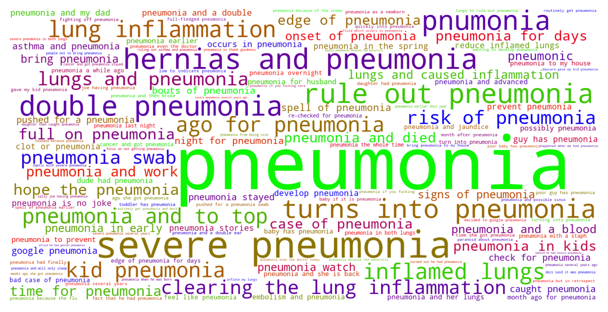

Jump to section:
Samples from Social CorpusHits per UMLS Alias on Social Corpus
Word Cloud Comparison
Embedding Space Comparison
Nearest Neighbors by Semantic Type
Related Analysed Concepts
Samples from Social Corpus
The next day my hallucinations went away and I was just dealing with the pneumonia but I still hate that I went psychotic and in front of my son as well .
Confidence: 1.000. Reddit link
Anyway , pneumonia and advanced dilation notwithstanding , I am making it !
Confidence: 0.707. Reddit link
Three weeks ago she got pneumonia , she spent two weeks at home , went one week to daycare and this past week she spent at home because it's Spring Vacation .
Confidence: 0.577. Reddit link
They also said one area may have some fluid which occurs in pneumonia but they are not sure .
Confidence: 0.567. Reddit link
PSA : IF YOU WANT MEDICAL PROFESSIONALS TO GET REALLY FOCUSED , CASUALLY MENTION YOUR POSITIVE TB TEST Me ( continues ) : but , you know , when I was hospitalized for that pneumonia , they checked and rechecked , it should be fine ...
Confidence: 1.000. Reddit link
Also mom is in the hospital with pneumonia if you fucking care .
Confidence: 0.557. Reddit link
Feeling sick but I'm not sure when to make the call I live with my parents and mom just came down with pneumonia and my dad with the flu .
Confidence: 1.000. Reddit link
My mom who has cancer has been in the hospital with pneumonia and she is back at urgent care now .
Confidence: 0.707. Reddit link
it was pneumonia ! !
Confidence: 1.000. Reddit link
He just got out of hospital after having pneumonia .
Confidence: 1.000. Reddit link
Hits per UMLS Alias on Social Corpus
-
pneumonia
333 hits
-
lung inflammation
3 hits
-
lung inflamed
3 hits
-
pneumonia nos
1 hits
-
pneum
0 hits
-
inflammation lungs
0 hits
-
pneumonia disorder
0 hits
-
pneumonitis nos
0 hits
-
unspecified pneumonia
0 hits
-
pulmonitis
0 hits
-
pulmonary inflammation
0 hits
-
pneumonias
0 hits
Word Cloud Comparison
Keywords matching C0032285
Keywords matched against concept. Word size represents frequency.
Keywords co-occurring with C0032285
Co-occurrence is measured at the document-level (i.e. Reddit submissions). Frequencies are normalized to account for keywords common to all CUIs.
Embedding Space Comparison
T-SNE comparison for word embeddings learned from medical domain (EuroPMC) and social media (Reddit) independently.
Pearson correlation for union of closest 1000 neighbors: 0.087
Nearest Neighbors by Semantic Type
Most similar concepts in each of the selected UMLS semantic types. Based on concept embeddings from social corpus.
T047 (Disease or Syndrome)
-
C0032285
Pneumonia
1.000 Similarity
-
C0276527
Aids with pneumonia
0.878 Similarity
-
C1412002
Walking pneumonia
0.870 Similarity
-
C0042384
Vasculitis
0.821 Similarity
-
C0037199
Sinus infection
0.811 Similarity
-
C0876973
Lung infection
0.795 Similarity
-
C0031350
Sore throat
0.775 Similarity
-
C0949083
Hospital acquired pneumonia
0.772 Similarity
T046 (Pathologic Function)
-
C0021368
Inflammation
0.782 Similarity
-
C0007642
Cellulitis
0.753 Similarity
-
C0034063
Pulmonary edema
0.724 Similarity
-
C0043241
Infection wound
0.697 Similarity
-
C0393391
Infection after injection
0.695 Similarity
-
C3714514
Infections
0.694 Similarity
-
C0041582
Ulcer
0.676 Similarity
-
C0001122
Acidosis
0.662 Similarity
T023 (Body Part, Organ, or Organ Component)
-
C0024109
Lung
0.737 Similarity
-
C0225730
Left lung
0.729 Similarity
-
C0024204
Lymph nodes
0.710 Similarity
-
C0588054
Lymph nodes neck
0.696 Similarity
-
C0746922
Noded
0.678 Similarity
-
C0040578
Trachea
0.644 Similarity
-
C1268107
Lung part
0.634 Similarity
-
C0580788
Tonsils adenoids
0.634 Similarity
T005 (Virus)
-
C0597404
Respiratory virus
0.710 Similarity
-
C0205939
Cold virus common
0.639 Similarity
-
C0205676
T viruses
0.632 Similarity
-
C0086776
Parvovirus
0.630 Similarity
-
C0042776
Virus
0.619 Similarity
-
C0949920
Stomach virus
0.611 Similarity
-
C3605735
Nanay virus
0.610 Similarity
-
C0599652
Leaky virus
0.599 Similarity
T190 (Anatomical Abnormality)
-
C0016169
Sinus
0.683 Similarity
-
C0019294
Inguinal hernia
0.558 Similarity
-
C0019270
Hernia
0.538 Similarity
-
C3887590
Stricture ureter
0.527 Similarity
-
C4703723
Muscle issues back
0.525 Similarity
-
C0281892
Left hernia
0.519 Similarity
-
C0149952
Ovary torsion
0.490 Similarity
-
C0240063
Keyhole iris
0.472 Similarity
T061 (Therapeutic or Preventive Procedure)
-
C2114838
Prophylactic antibiotics prescribed
0.664 Similarity
-
C0282638
Prescription prophylactic antibiotic
0.661 Similarity
-
C0547605
Infection prevention
0.650 Similarity
-
C0035239
Respiratory therapy
0.631 Similarity
-
C0199779
Antibiotics injection
0.616 Similarity
-
C0920425
Cancer treatment
0.611 Similarity
-
C0392920
Chemo
0.606 Similarity
-
C0436307
Chemoradiation
0.597 Similarity
T031 (Body Substance)
-
C0024202
Lymph
0.664 Similarity
-
C0225379
Upper respiratory fluid
0.659 Similarity
-
C4520494
Swab from foot
0.581 Similarity
-
C3496630
Swab from uterus
0.578 Similarity
-
C1442199
Blood or tissue
0.564 Similarity
-
C0012621
Discharge
0.546 Similarity
-
C0007806
Spinal fluid
0.534 Similarity
-
C0015733
Crap
0.529 Similarity
T184 (Sign or Symptom)
-
C1269642
Pain from metastases
0.663 Similarity
-
C0559687
Throat congestion
0.645 Similarity
-
C0687713
Gastrointestinal pain
0.644 Similarity
-
C0558489
Renal pain
0.642 Similarity
-
C0015967
Fever
0.637 Similarity
-
C0849791
Sinus drainage
0.624 Similarity
-
C4042866
Flareup symptom
0.623 Similarity
-
C0847014
Rash fever
0.622 Similarity
T037 (Injury or Poisoning)
-
C0160420
Kidney injury
0.660 Similarity
-
C0033119
Pricks
0.569 Similarity
-
C0016655
Fractures multiple
0.562 Similarity
-
C0160073
Other hand sprain
0.558 Similarity
-
C0035522
Broken rib
0.549 Similarity
-
C0562057
Burning throat
0.546 Similarity
-
C0160115
Sprained rib
0.543 Similarity
-
C0038045
Sprain
0.541 Similarity
T195 (Antibiotic)
-
C0003232
Antibiotics
0.653 Similarity
-
C0718575
Antibiotics ear
0.632 Similarity
-
C0002645
Amoxicillin
0.604 Similarity
-
C0013090
Doxycycline
0.570 Similarity
-
C0279516
Antibacterial
0.526 Similarity
-
C0723285
Septa
0.466 Similarity
-
C0030842
Penicillin
0.462 Similarity
-
C0718950
Biomox
0.450 Similarity
T039 (Physiologic Function)
-
C0035203
Ventilation
0.635 Similarity
-
C1456599
Lungs breathing
0.577 Similarity
-
C0035245
Lung function
0.542 Similarity
-
C3179159
Sedative effects
0.506 Similarity
-
C0005775
Circulation
0.497 Similarity
-
C0599423
Joint stress
0.472 Similarity
-
C0232338
Blood flow
0.468 Similarity
-
C0026820
Muscle contraction
0.452 Similarity
T074 (Medical Device)
-
C0454152
Blocking kidney
0.631 Similarity
-
C0042497
Respirator
0.604 Similarity
-
C0021461
Inhaler
0.567 Similarity
-
C0027524
Nebulizer
0.564 Similarity
-
C0178987
Airway
0.550 Similarity
-
C3879150
Vascular booties
0.549 Similarity
-
C3696780
Tube oxygen
0.539 Similarity
-
C0812453
Cold compresses
0.536 Similarity
T201 (Clinical Attribute)
-
C0231832
Breathing rate
0.628 Similarity
-
C0012655
Predisposition
0.583 Similarity
-
C0035234
Breathing sound
0.582 Similarity
-
C0429622
Oxygen supply
0.509 Similarity
-
C1519453
Spiculation
0.477 Similarity
-
C0521982
Successful treatment
0.466 Similarity
-
C1285995
Measure uterine contractions
0.451 Similarity
-
C1286272
Form bone
0.447 Similarity
T042 (Organ or Tissue Function)
-
C1160388
Respiratory tube development
0.622 Similarity
-
C0042396
Vasospasm
0.561 Similarity
-
C0005778
Clotting
0.537 Similarity
-
C0232804
Kidney function
0.523 Similarity
-
C0231940
Oxygenation
0.520 Similarity
-
C0232102
Blood fluidity
0.519 Similarity
-
C0150479
Blood gas
0.504 Similarity
-
C0232741
Liver function
0.497 Similarity
T019 (Congenital Abnormality)
-
C0265783
Underdeveloped lung
0.619 Similarity
-
C0019555
Dislocated hip since birth
0.605 Similarity
-
C0152021
Congenital heart disease
0.584 Similarity
-
C0264303
Laryngomalacia
0.575 Similarity
-
C0266294
Kidney single
0.572 Similarity
-
C0266449
Brain malformation
0.567 Similarity
-
C0000768
Birth defect
0.549 Similarity
-
C0344735
Septum primum defect
0.539 Similarity
T032 (Organism Attribute)
-
C0949285
Antibiotic resistance
0.602 Similarity
-
C0220898
Susceptible
0.514 Similarity
-
C0805393
Breathing spontaneous
0.477 Similarity
-
C0019425
Heterozygous
0.443 Similarity
-
C0575118
Normal posture
0.422 Similarity
-
C0518035
Children growth
0.414 Similarity
-
C0020969
Natural immunity
0.413 Similarity
-
C3714565
Physical condition
0.403 Similarity
T101 (Patient or Disabled Group)
-
C1516213
Cancer patient
0.592 Similarity
-
C0008098
Child hospitalized
0.563 Similarity
-
C0871503
Dying patients
0.535 Similarity
-
C0682161
Dually diagnosed
0.525 Similarity
-
C1456639
Living with cancer
0.496 Similarity
-
C0029921
Outpatient
0.472 Similarity
-
C0021562
Inpatient
0.449 Similarity
-
C0039552
Ill terminally
0.444 Similarity
T060 (Diagnostic Procedure)
-
C0014245
Endoscopy
0.586 Similarity
-
C0920688
Cancer diagnosis
0.578 Similarity
-
C0009378
Colonoscopy
0.568 Similarity
-
C0195324
Cone biopsy
0.566 Similarity
-
C0013798
Ekg
0.531 Similarity
-
C0033053
Prenatal diagnoses
0.527 Similarity
-
C0199747
Allergy testing
0.526 Similarity
-
C0024119
Function tests lung
0.511 Similarity
T200 (Clinical Drug)
-
C0723917
Triple antibiotic ointment
0.583 Similarity
-
C0678431
Cough syrup
0.473 Similarity
-
C3218395
Papain pill
0.463 Similarity
-
C1163679
Injections sterile water
0.460 Similarity
-
C1242003
Mol iron tablets
0.412 Similarity
-
C4049857
Lidocaine injection
0.398 Similarity
-
C1251945
Hydrocortisone cream
0.397 Similarity
-
C0307304
Pitocin injection
0.393 Similarity
T059 (Laboratory Procedure)
-
C0430402
Bacterial cultures
0.582 Similarity
-
C0018941
Blood test
0.546 Similarity
-
C0023508
White blood cells
0.543 Similarity
-
C0023901
Liver tests
0.532 Similarity
-
C0368930
Clotting time
0.505 Similarity
-
C0200949
Blood cultures
0.501 Similarity
-
C0430400
Culture general
0.499 Similarity
-
C0201811
Stool testing
0.487 Similarity
T079 (Temporal Concept)
-
C0439588
Acute chronic
0.567 Similarity
-
C0032790
After surgery
0.534 Similarity
-
C0205191
Chronic
0.515 Similarity
-
C0205178
Acute
0.509 Similarity
-
C0441943
Pre surgery
0.504 Similarity
-
C0439600
Remitting
0.492 Similarity
-
C4025592
Late onset
0.479 Similarity
-
C3494201
Surgical time
0.475 Similarity
T048 (Mental or Behavioral Dysfunction)
-
C0233705
Fear getting cancer
0.556 Similarity
-
C0003635
Apraxia
0.534 Similarity
-
C0338927
Hospitalism
0.532 Similarity
-
C0036857
Severe mental handicap
0.500 Similarity
-
C0013415
Dysthymia
0.492 Similarity
-
C0236792
Aspergers disease
0.480 Similarity
-
C0855228
Disordered eating
0.473 Similarity
-
C3840214
High functioning autism
0.458 Similarity
T007 (Bacterium)
-
C0014834
E coli
0.525 Similarity
-
C0018154
Gram positive bacteria
0.521 Similarity
-
C0004611
Bacteria
0.512 Similarity
-
C0036111
Salmonella
0.471 Similarity
-
C0995648
Genus quinella
0.436 Similarity
-
C0579233
Group b strep
0.431 Similarity
-
C3137302
Brownia
0.387 Similarity
-
C0525033
Probiotics
0.369 Similarity
T054 (Social Behavior)
-
C0282657
Infibulations
0.507 Similarity
-
C1261512
Attack
0.462 Similarity
-
C4277668
Anti vaccine group
0.450 Similarity
-
C0679426
Incompatibility
0.408 Similarity
-
C0422386
Patient suing doctor finding
0.388 Similarity
-
C0162388
Killing
0.375 Similarity
-
C0028658
Nurse patient
0.374 Similarity
-
C0582101
Talking about dying
0.373 Similarity
T034 (Laboratory or Test Result)
-
C1287351
Liver enzymes
0.500 Similarity
-
C0849535
Blood test results
0.477 Similarity
-
C0241988
M spike
0.473 Similarity
-
C0852859
Negative blood culture
0.472 Similarity
-
C0425986
Pregnant blood test confirms
0.459 Similarity
-
C0741132
Antibody positive
0.458 Similarity
-
C0427729
Urine blood test = negative
0.458 Similarity
-
C0428309
Magnesium blood
0.456 Similarity
T049 (Cell or Molecular Dysfunction)
-
C1705285
Mutated
0.499 Similarity
-
C4725191
Stop lost
0.492 Similarity
-
C0544885
Stop gain
0.466 Similarity
-
C0002938
Aneuploidy
0.413 Similarity
-
C0040715
Translocation
0.360 Similarity
-
C0008628
Del
0.358 Similarity
-
C0008625
Chromosomal abnormality
0.354 Similarity
-
C0041107
Trisomy
0.344 Similarity
T018 (Embryonic Structure)
-
C0231024
Neural tube
0.491 Similarity
-
C0440731
Fetal brain
0.491 Similarity
-
C0041637
Umbilical vein
0.472 Similarity
-
C0041632
Umbilical artery
0.449 Similarity
-
C3272697
Remnant
0.448 Similarity
-
C1284022
Trilaminar disc
0.416 Similarity
-
C0008508
Chorionic villi
0.415 Similarity
-
C0002630
Amniotic
0.407 Similarity
T044 (Molecular Function)
-
C0369768
Oxygen saturation
0.478 Similarity
-
C0010357
Cross reactive
0.407 Similarity
-
C1152025
Docs
0.391 Similarity
-
C0301647
Strand breaks
0.387 Similarity
-
C1749457
Ligands activity
0.380 Similarity
-
C0887940
Gene arrangements
0.375 Similarity
-
C1721104
Breaks dna
0.358 Similarity
-
C1150342
Dopachrome rearranging enzyme
0.330 Similarity
T100 (Age Group)
-
C4048294
Preterm baby
0.478 Similarity
-
C3494262
Extremely preterm infant
0.465 Similarity
-
C4551581
Full term baby
0.434 Similarity
-
C0021289
Newborn
0.431 Similarity
-
C0682054
Mature adult
0.382 Similarity
-
C3146221
Juvenile
0.338 Similarity
-
C0596728
65 years old
0.317 Similarity
-
C0238598
Young adult
0.317 Similarity
T067 (Phenomenon or Process)
-
C0441723
Irritation
0.477 Similarity
-
C0023983
Long term effects
0.472 Similarity
-
C0012652
Outbreak
0.461 Similarity
-
C0034897
Recurring
0.446 Similarity
-
C0042491
Air ventilation
0.439 Similarity
-
C2700618
Cavitating
0.420 Similarity
-
C0014499
Epidemic
0.383 Similarity
-
C0677038
Increase pressure
0.383 Similarity
T041 (Mental Process)
-
C0679201
Infer
0.432 Similarity
-
C0546816
Persistence
0.430 Similarity
-
C0009647
Conditioned
0.413 Similarity
-
C3838995
Ability recognize symptoms
0.401 Similarity
-
C0563143
Functioning mental
0.400 Similarity
-
C0004056
Aspirations
0.399 Similarity
-
C0035280
Retention
0.378 Similarity
-
C0524369
Mid life crisis
0.369 Similarity